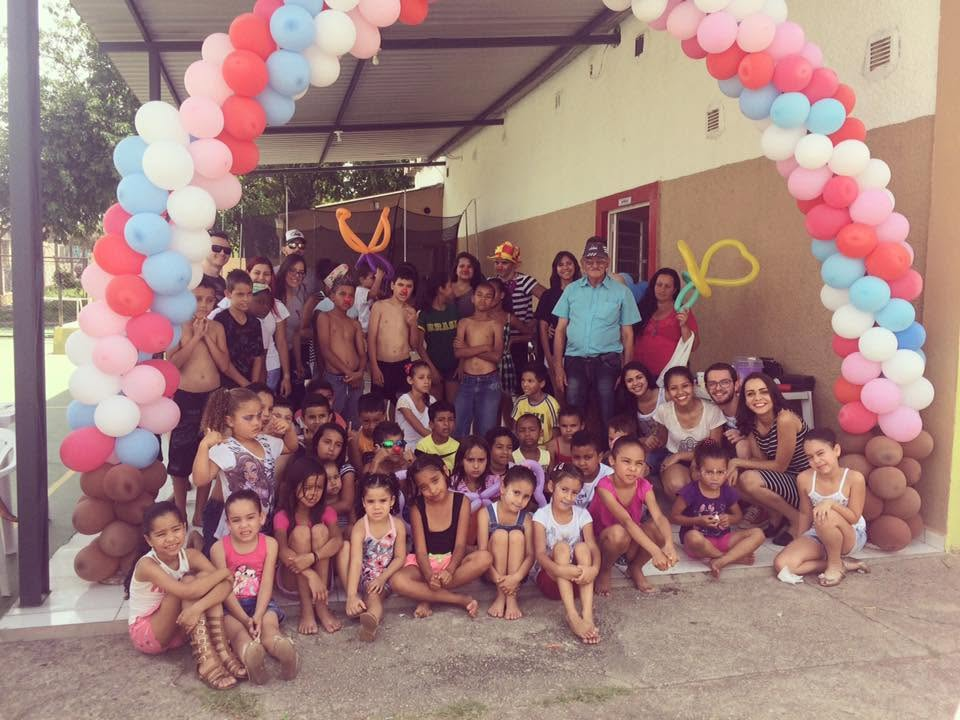

Um dia no CIS é feito de aprendizado, brincadeira, alimentação e muito cuidado.
Cada atividade é pensada para cuidar da criança por inteiro — mente, corpo e emoções.
Acompanhamento das tarefas e apoio nas matérias com maior dificuldade, em grupos pequenos.
Refeições e lanches equilibrados todos os dias, garantindo nutrição durante o período no CIS.
Futebol, jogos e brincadeiras que ensinam disciplina, trabalho em equipe e respeito.
Oficinas de música, desenho e teatro que estimulam a criatividade e a expressão.
Rodas de conversa e escuta acolhedora para ajudar cada criança a lidar com suas emoções.
Noções básicas de informática e uso responsável da tecnologia para o mundo de hoje.

As crianças chegam no contraturno escolar — de manhã (8h às 13h) ou à tarde (13h às 17h) — e encontram uma rotina segura e afetuosa:
Tudo isso acompanhado de perto por educadores e voluntários que conhecem cada criança pelo nome.
Momentos das nossas crianças em atividades e festas no CIS.
‹ arraste para o lado ou use as setas ›
Cada oficina, refeição e material didático é possível graças a quem apoia o CIS.